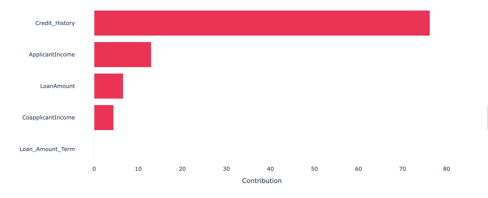
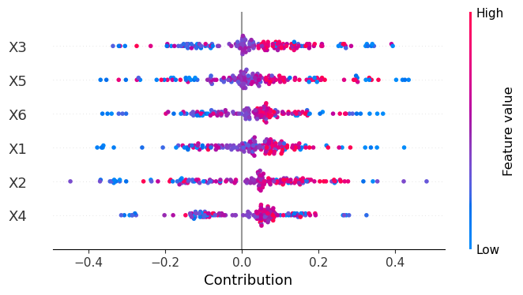
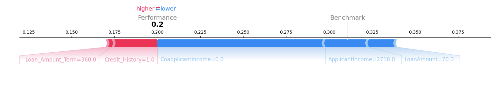

XPER.viz package
XPER.viz.Visualisation module
- XPER.viz.Visualisation. bar_plot(XPER_values, X_test, labels, p, percentage=True) [source]
-
Create a bar plot to visualize contributions, such as feature importances or data distributions.
Parameters
- XPER_valuesnumpy.ndarray
Array of contributions to be visualized.
- X_testpandas.DataFrame
Data used for labeling the plot. Typically includes feature names.
- labelslist
List of labels corresponding to each contribution in
XPER_values.- pint
Number of top contributions to display in the plot.
- percentagebool, optional
If
True, contributions are shown as percentages. Default isTrue.
Returns
bar_plot
Examples
from XPER.viz.Visualisation import visualizationClass as viz labels = list(loan.drop(columns='Loan_Status').columns) viz.bar_plot(XPER_values=XPER_values, X_test=X_test, labels=labels, p=5, percentage=True)
Example output:
Notes
This function creates a horizontal bar plot using Plotly. The bars represent the contributions, which can be either in absolute values or percentages, depending on the
percentageparameter. The function uses a gradient color scheme for the bars, providing a visual distinction of the contribution magnitudes.
- XPER.viz.Visualisation. beeswarn_plot(XPER_values, X_test, labels) [source]
-
Create a beeswarm plot to visualize the distribution of data points across different categories.
Parameters
- XPER_valuesnumpy.ndarray
Array of contributions to be visualized in the beeswarm plot.
- X_testpandas.DataFrame
Data used for labeling the plot, typically feature names.
- labelslist
List of labels corresponding to each contribution in
XPER_values.
Returns
beeswarn_plot
Examples
from XPER.viz.Visualisation import visualizationClass as viz labels = list(loan.drop(columns='Loan_Status').columns) viz.beeswarn_plot(XPER_values=XPER_values, X_test=X_test, labels=labels)
Example output:
Notes
This function creates a beeswarm plot using Plotly. The plot helps visualize the distribution and density of data points across categories, often used for understanding the spread and concentration of data.
- XPER.viz.Visualisation. force_plot(XPER_values, instance, X_test, variable_name, figsize=(16,4)) [source]
-
Create a force plot to explain individual predictions.
Parameters
- XPER_valuesnumpy.ndarray
Array of contributions to be visualized.
- instanceint
Index of the instance for which the force plot is created.
- X_testpandas.DataFrame
Data used for labeling the plot, typically feature names.
- variable_namelist
List of variable names corresponding to each contribution in
XPER_values.- figsizetuple, optional
Figure size for the plot, default is
(16,4).
Returns
force_plot
Examples
from XPER.viz.Visualisation import visualizationClass as viz labels = list(loan.drop(columns='Loan_Status').columns) viz.force_plot(XPER_values=XPER_values, instance=1, X_test=X_test, variable_name=labels, figsize=(16, 4))
Example output:
Notes
The force plot visually explains the contributions of features to a specific prediction. It's a useful tool for understanding the influence of different variables on an individual instance's outcome.